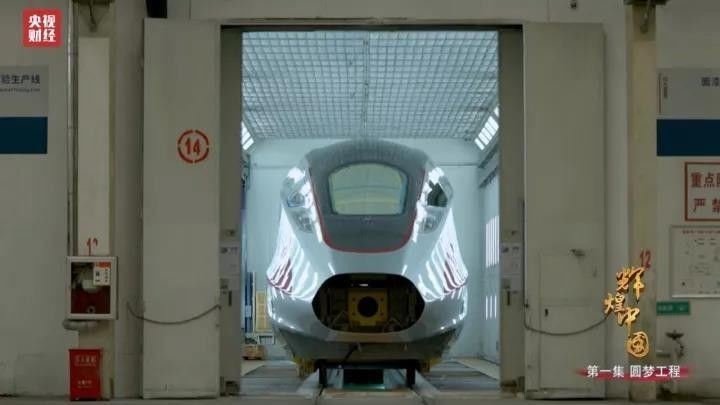

厉害了我的祖国！中国高铁震惊全世界
2019-08-22 10:33
咱们的出行标配——高铁
如今已是外国人最想带回家的“中国特产”
更有人在高铁上做了个实验
结果让全世界震惊
一起来看看是什么厉害的实验吧
↓↓↓
高速行驶的列车上，4枚硬币稳稳立住，并且能保持立住的状态超过一分钟。中国高铁的平稳、舒适已经被无数网友点赞。
这些外国乘客，也都是专程来体验和感受的。
波兰留学生马克斯表示：
“我感到列车行驶非常平稳，几乎感受不到任何摇晃颠簸之类的。我还注意到的一件事是，空间更大了，非常棒。”
高颜值、高速度！
中国高铁是他们眼里中国的“新四大发明”，是最想带回家的“中国特产”之一。
那么
中国高铁究竟有多牛呢？
↓↓↓
让中国奔跑起来，中国车，正在给经济换装新引擎。
2017年6月25日“复兴号”下线，与日本、德国等高铁强国相比，今天，中国在高铁技术领域已不逊色于任何一位竞争对手。

复兴号”涉及的高速动车组254项重要标准中，中国标准占到了84%。
运行时速高达350公里，从北京到上海只要4.5小时左右。
大洋彼岸的波士顿，中国陆续拿下的地铁订单，已经超过了400列。中国制造迈向中国创造，中国车率先完成了漂亮的转身。
为中国高铁点赞！